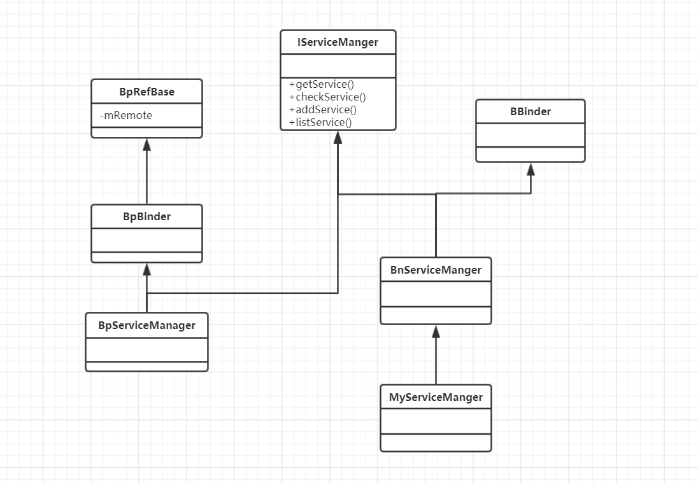

业务层如何架构在Binder机制上
定义业务逻辑
IServiceManager 是怎么做的
IServiceManager.h
1
2
3
4
5
6
7
8
9
10
11
12
13
14
15
16
17
18
19
20
21
22
23class IServiceManager : public IInterface
{
public:
DECLARE_META_INTERFACE(ServiceManager); //定义宏
/**
* Retrieve an existing service, blocking for a few seconds
* if it doesn't yet exist.
*/
virtual sp<IBinder> getService( const String16& name) const = 0;
// Retrieve an existing service, non-blocking.
virtual sp<IBinder> checkService( const String16& name) const = 0;
// Register a service.
virtual status_t addService( const String16& name,
const sp<IBinder>& service,
bool allowIsolated = false) = 0;
// Return list of all existing services.
virtual Vector<String16> listServices() = 0;
};
业务与通讯的挂钩
Android通过
DECLARE_META_INTERFACE和IMPLENT宏,将业务钩在一起DECLARE_META_INTERFACE和IMPLEMENT_META_INTERFACE都在IInterface.hDECLARE_META_INTERFACE声明一些函数和一个变量IMPLEMENT_META_INTERFACE就是定义声明的函数和变量IInterface.h
1
2
3
4
5
6
7
8
9
10
11
12
13
14
15
16
17
18
19
20
21
22
23
24
25
26
27
28
29
30
31#define DECLARE_META_INTERFACE(INTERFACE) //宏
static const android::String16 descriptor;
static android::sp<I##INTERFACE> asInterface(
const android::sp<android::IBinder>& obj);
virtual const android::String16& getInterfaceDescriptor() const;
I##INTERFACE();
virtual ~I##INTERFACE();
#define IMPLEMENT_META_INTERFACE(INTERFACE, NAME) //宏
const android::String16 I##INTERFACE::descriptor(NAME);
const android::String16&
I##INTERFACE::getInterfaceDescriptor() const {
return I##INTERFACE::descriptor;
}
android::sp<I##INTERFACE> I##INTERFACE::asInterface(
const android::sp<android::IBinder>& obj)
{
android::sp<I##INTERFACE> intr;
if (obj != NULL) {
intr = static_cast<I##INTERFACE*>(
obj->queryLocalInterface(
I##INTERFACE::descriptor).get());
if (intr == NULL) {
intr = new Bp##INTERFACE(obj);
}
}
return intr;
}
I##INTERFACE::I##INTERFACE() { }
I##INTERFACE::~I##INTERFACE() { }
替换声明 函数和变量
DECLARE_META_INTERFACE这个宏，在IInterface.h和IServiceManager.h有共同声明，套用可得1
2
3
4
5
6
7
8
9static const android::String16 descriptor //定义一个描述字符
static android::sp<IServiceManager> asInterface(
const android::sp<android::IBinder>& obj);
// 定义一个 getInterfaceDescriptor函数，估计就是返回 descriptor 字符串
virtual const android::String16& getInterfaceDescriptor() const;
// 定义一个 IServiceManager 的构造函数和析构函数
IServiceManager();
virtual ~IServiceManager();
##### 定义使用 函数和变量
IServiceManager.cpp
1
IMPLEMENT_META_INTERFACE(ServiceManager, "android.os.IServiceManager");
宏定义展开( ServiceManager, “android.os.IServiceManager” 参数，套进 IInterface.h 的 IMPLEMENT_META_INTERFACE(INTERFACE, NAME) 这个宏定义中，得：)
1
2
3
4
5
6
7
8
9
10
11
12
13
14
15
16
17
18
19
20
21
22
23
24
25
26
27
28
29
30
31
32
33
34
35const android::String16
IServiceManager::descriptor("android.os.IServiceManager");
//实现getInterfaceDescriptor函数。
const android::String16& IServiceManager::getInterfaceDescriptor() const
{
//返回字符串descriptor，值是"android.os.IServiceManager"。
return IServiceManager::descriptor;
}
//实现asInterface函数。
android::sp<IServiceManager>
IServiceManager::asInterface(const android::
sp<android::IBinder>& obj)
{
android::sp<IServiceManager> intr;
if (obj != NULL) {
intr = static_cast<IServiceManager *>(
obj->queryLocalInterface
(IServiceManager::descriptor).get());
if (intr == NULL) {
/*
* obj是我们刚才创建的那个BpBinder(0)。
*
* 记不记得，之前 MediaServer理解Binder 篇， SM注册服务
* 实际返回的是BpServiceManager
* 但是最终却返回的是 IServiceManager
* 请看下面 的 图示 关系
*/
intr = new BpServiceManager(obj);
}
}
return intr;
}
//实现构造函数和析构函数。
IServiceManager::IServiceManager () { }
IServiceManager::~ IServiceManager() { }
图示

基于Android版本 5.1_LMY47D
- 本文链接：https://www.wl960127.top/posts/29281/
- 版权声明：本站内容均为个人学习笔记,不涉及商业用途，仅提供学习参考,第三方摘录已署名链接,未署名请评论添加,转载署名来源即可。
分享